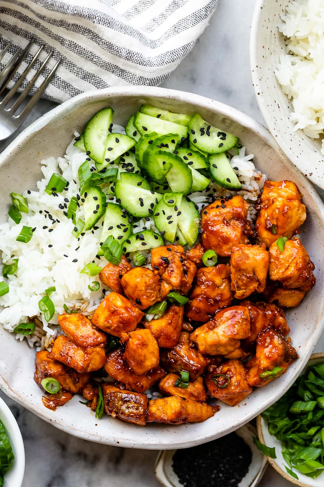

Korean Salmon & Rice

This Korean Salmonn & Rice bowl is quick and full of flavor for the family to enjoy!
Ingredients
- Salmon: Dice four salmon fillets into one-inch cubes.
- Salmon Marinade: Minced ginger, soy sauce
- Gochujang Paste or sauce is a Korean condiment that’s spicy and a little sweet. You should be able to find it at your local supermarket, but if not, you can purchase it from Amazon.
- Mirin is an Asian rice wine with more sugar and less alcohol than sake.
- Soy Sauce: You’ll need more soy sauce for the gochujang glaze, plus extra for serving.
- Sugar: A little sugar balances out the spicy, savory flavors.
- Toasted Sesame Oil: Just half a teaspoon of sesame oil gives the glaze a more complex flavor.
- Garlic: Mince one small clove.
- Rice: Cook brown rice on the stove or in the Instant Pot.
- Vegetables: Slice four mini cucumbers and a few scallions.
- Black Sesame Seeds to sprinkle on top of the gochujang salmon bowls
Steps to cook
- Gochujang Glaze: Combine all the glaze ingredients in a small bowl.
- Marinate the Salmon: Pour the soy sauce and ginger on the fish and let it sit for five minutes. You can marinate it for up to 30 minutes, but any longer may make the fish mushy since soy sauce is acidic.
- Air Fry Salmon: Spray the air fryer basket with oil and air fry the salmon for five minutes at 400°F, shaking halfway. Brush the glaze over the fish and cook one more minute.
- Assemble the Rice Bowls: Put a quarter of the rice and cucumbers in each bowl. Top with salmon, sesame seeds, and scallions, and serve with more soy sauce if desired.